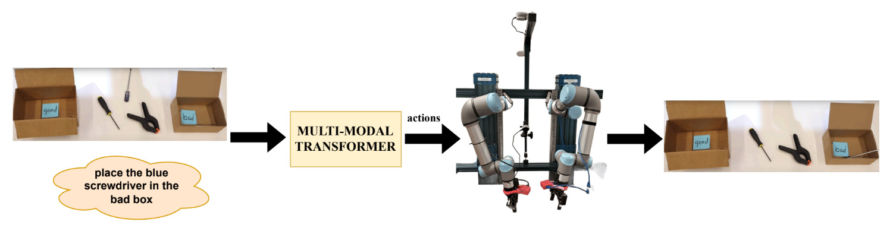
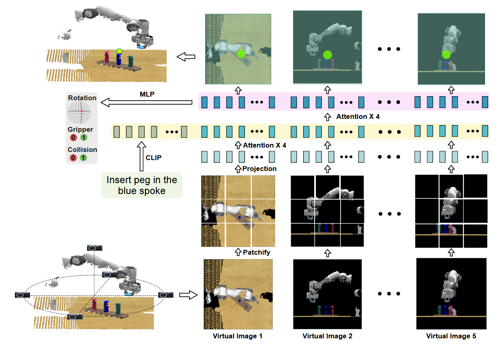

3D Vision-Language Model for Generalized Robotic Manipulation
Spring 2025 CSCI 5541 NLP: Class Project - University of Minnesota
Pickachu

Aditya Bidwai

Samra Huseynova
Aditya Bidwai
Samra Huseynova
Generalized language-conditioned robotic manipulation remains a key challenge in the integration of natural language in robotics or embodied AI. While previous approaches have leveraged vision-language models (VLMs) like Contrastive Language-Image Pretraining (CLIP), they often struggle with generalization across diverse tasks and environments. In this project, we focus on improving language-conditioned robotic manipulation across varied 3D tasks, object types, and environments. We use Sigmoidal Language-Image Pre-Training 2 (SigLIP2), a more recent VLM, as our vision-language backbone and condition a transformer-based policy network to predict robot actions. The model is trained in an end-to-end fashion using Imitation Learning. The main objective of our project is to improve generalization across varied 3D tasks, object types, and environments, advancing the robustness of VLM-guided robotic manipulation. We want to understand whether multi-modal learning can help in performing complex 3D manipulation tasks.

We aim to develop a general-purpose robotic manipulation system that understands natural language commands and performs diverse 3D object tasks using a dual-arm setup. Our objective is to explore whether vision-language models (VLMs) can help robots perform a wide range of manipulation tasks in varied settings.
Most current approaches rely on task-specific models or single-arm robots, which limits their ability to generalize across different environments, objects, or instructions. While recent vision-language models have shown promise, they are mostly tested on simple tasks and do not support bimanual coordination or more complex real-world execution.
Potentially, this work can significantly improve the scalability and usefulness of real-world robot assistants - particularly in environments like homes, warehouses, or labs, where tasks vary in complexity and structure. We believe that building robust, language-grounded, multi-task policies will be essential for real-world deployment of general-purpose robots.
Our goal is to learn a single transformer-based model for a variety of different language-conditioned robot manipulation tasks. The input consists of (1) a language description of the task, (2) the current visual state (from RGB-D camera(s)), and (3) the current gripper state (open or closed). The model should predict an action, specified by a target end-effector pose and gripper state at the next key-frame. The key-frames represent important or bottleneck steps of the end-effector during the task execution such as a pre-pick, grasp, or place pose. Our dataset consists of pre-generated RLBench (simulations) demonstrations open-sourced by (Shridhar et al., 2022). The authors have divided this dataset into train, validate, and test, containing 100, 25, and 25 episodes, respectively. This dataset is used to train the model with Imitation learning approach of behavior cloning. Our Transformer architecture is visualized in the image below. The input to the transformer is a language description of the task and virtual images of the scene point cloud. The text is converted into token embeddings using the pretrained CLIP model, while the virtual images are converted into token embeddings via patchify operations. For each virtual image, tokens belonging to the same image are processed via four attention layers. Finally, the processed image tokens as well as the language tokens are jointly processed using four attention layers. The 3D action is inferred using the resulting image tokens.

We trained Transformer model on a single task—“put groceries into cupboard”—using a total of 100 task variations over 15 epochs. The training setup used a batch size of 4, three data loading workers, and a task-uniform sampling strategy. The process took around 16 hours to complete. We used the LAMB optimizer with a learning rate of 1.25e-5 and applied translation augmentation of ±12.5 cm and rotation augmentation of ±45° around the z-axis. Mixed precision training (AMP) and memory-efficient 8-bit optimizers were enabled to help with performance and GPU memory usage. The Transformer architecture follows a two-stage design, where the model first predicts a coarse location using multiple fixed RGB-D cameras, and then refines the prediction using a zoomed-in view. The simulation used four RGB-D cameras in total: a front view, top view, right-side view, and a gripper-mounted camera. The gripper camera provides a close-up view from the robot’s perspective, which is especially useful for fine-grained manipulation. Loss curves (e.g., total loss, grip loss, and rotation loss) consistently decreased throughout training, indicating good convergence. Evaluation was done on 25 new variations of the same task using CoppeliaSim, which also allowed us to visualize results. The model was able to follow language instructions reasonably well, differentiate between objects, and pick items based on colors—even when the exact color was not in view, it would choose the closest match. However, we also found some limitations: the model struggles with understanding shape and texture, has trouble identifying orientation of the shelves, and sometimes fails to grasp or place objects correctly. It’s also sensitive to misspellings in the language commands. While it can differentiate between different objects and colors to some extent, it still needs improvement in dealing with more complex scenes and instructions. Overall, the model showed solid performance on the chosen task, but further work is needed to make it more robust and accurate in varied conditions.
Figure 1: Rotation loss - X
Figure 2: Rotation loss - Y
Figure 3: Rotation loss - Z
Figure 4: Gripper loss
Figure 5: Collision loss
Figure 6: Total loss
Task 1.1: Place Cracker box in the Cupboard
Task 1.2: Place Sugar box in the cupboard
In conclusion, our training and evaluation of the baseline model on the “put groceries into cupboard” task showed promising results, with the model demonstrating a reasonable understanding of language commands and visual features in simulation. While it successfully differentiated between items and handled basic manipulation, challenges remain in terms of handling shape, texture, language ambiguity, and spatial understanding. To address these limitations and move toward real-world deployment, our future work involves collecting expert demonstrations on physical hardware using a bimanual robot setup. We aim to fine-tune the current model on real-world data collected across various RLBench tasks. Preparations are already underway, including learning the SPARK system for data collection, setting up camera calibration, and preparing our hardware for high-quality demonstration recording. This transition from simulation to real-world will allow us to test the generalization ability of the model, improve its robustness, and better align it with practical applications.
If you need to explain more about your figure